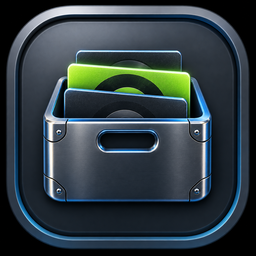
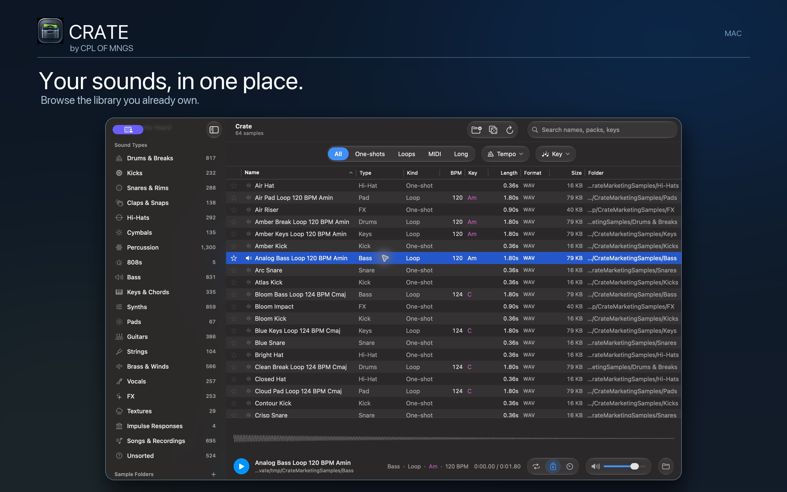

Find faster
Bring your folders into one place. Search across filenames and narrow by sound type, loop kind, tempo and key.

CRATESearch the samples you already own, hear them in the moment, and drag the right sound into your DAW. A focused, native space for a growing library.
Find the right sound, fast
Bring your folders into one place. Search across filenames and narrow by sound type, loop kind, tempo and key.
Audition by clicking or with the keyboard. Preview a waveform, sync loops to project tempo, and drag the original file into your DAW.
Find Similar reveals nearby sounds from your library. Favorites and Recently Heard keep useful discoveries close.